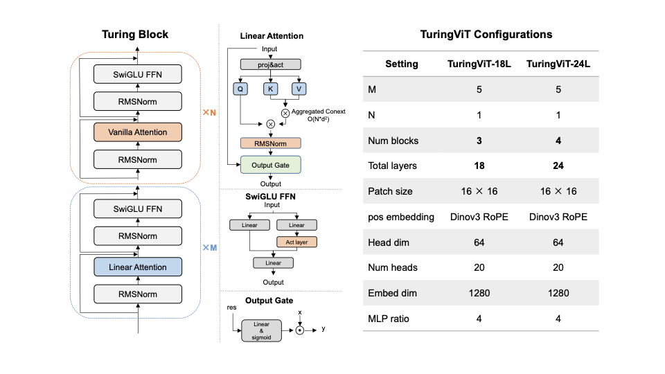
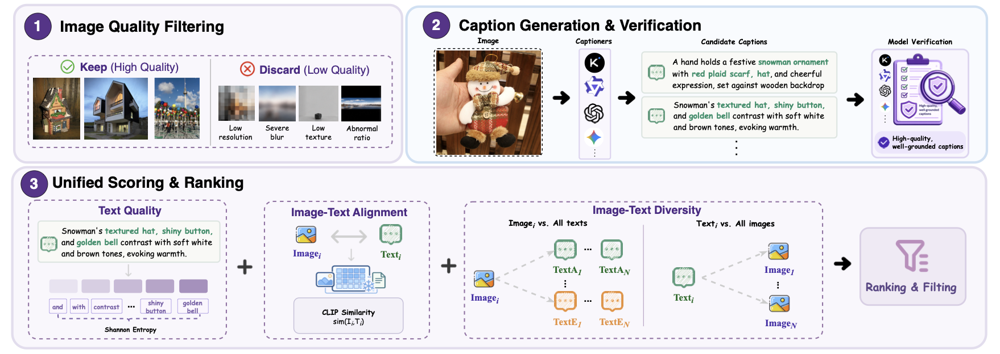
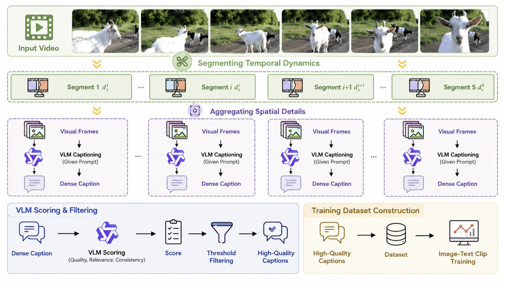

Architecture-Efficient
The Turing Linear Attention (TLA) dominates the stack; only 1 of every 6 layers keeps softmax MHA for global routing. Quadratic → near-linear scaling, with input-dependent gating that preserves local & high-frequency cues.
A VLM-native, data-efficient and linear-complexity Vision Transformer. We show a concrete, reproducible path for designing and training your own SOTA-level visual encoder under a controlled resource budget — outperforming leading open-source ViT baselines using only 10% of the data, with substantially flatter latency scaling for high-resolution and dynamic-resolution inputs.
TuringViT rethinks visual encoders along three orthogonal axes — architecture, data, and training — to make SOTA-level encoders trainable and customizable under realistic resource budgets.
The Turing Linear Attention (TLA) dominates the stack; only 1 of every 6 layers keeps softmax MHA for global routing. Quadratic → near-linear scaling, with input-dependent gating that preserves local & high-frequency cues.
VISTA-Curation turns noisy web image–text and video–text data into grounded, discriminative, temporally informative supervision. Result: 10× data reduction without sacrificing quality.
Trained natively at dynamic resolution from the start; no post-hoc adaptation, no extra parameters when plugged into downstream VLMs. Generation-aligned objectives further bridge contrastive ViT and generative VLM training.
Linear attention does the heavy lifting; sparse vanilla MHA preserves explicit token-to-token interaction.

Drag the slider to feed more visual tokens into each model. Watch standard ViTs explode while TuringViT stays flat.
Curves are illustrative — based on the asymptotic O(N²) vs. O(N) behavior reported in the paper. See Fig. 1 in the manuscript for measured numbers.
Vision Data Curation via Image–Video Scoring and Temporal Aggregation. Each sample is filtered, recaptioned, scored, grounded, and (for video) temporally aggregated — turning noisy web data into denser supervision.


The goal is not to introduce complex objectives, but to progressively expose the encoder to the same inputs downstream VLMs see — dynamic-resolution images, high-resolution visual content, and mixed image–video data. Both 18L and 24L follow the same recipe.
Reconstruct masked EVA02-CLIP-E features (40% mask rate) to bootstrap geometric priors before language alignment.
Aspect-preserving dynamic resolution with longer side ∈ [256, 512]; SigLIP + SuperClass loss for large-scale alignment.
Cap longer side at 2048, covering nearly all native-resolution images. Sharpens local detail for OCR / charts / GUI inputs.
Mix video–text with image–text replay. T=8 frames → attention-pool → mean-pool video embedding aligned via LVT.
| Encoder | Resolution | Data | IN-1K | IN-A | Avg. cls. | |
|---|---|---|---|---|---|---|
| SigLIP-B | 0.1B | 224 | 10B | 76.2 | 45.1 | 69.9 |
| SigLIP2-B | 0.1B | 224 | 10B | 78.2 | 55.0 | 73.1 |
| SigLIP-L | 0.3B | 384 | 10B | 82.1 | 76.5 | 80.7 |
| SigLIP2-L | 0.3B | 384 | 10B | 83.1 | 84.3 | 83.3 |
| TuringViT-18L | 0.3B | dyn. | 0.85B | 83.11 | 87.88 | 82.40 |
| TuringViT-24L | 0.5B | dyn. | 0.85B | 83.90 | 89.72 | 83.60 |